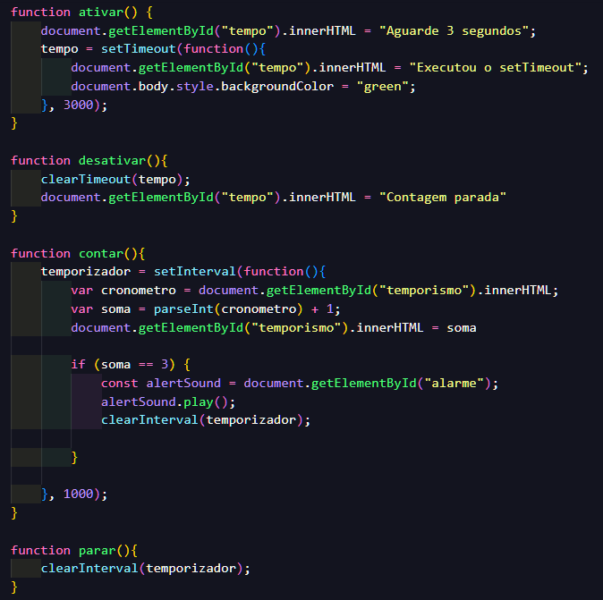

CODIGO DAS FUNÇÕES ACIMA
Esse código contém funções para gerenciar dois tipos de temporizadores em JavaScript: setTimeout e setInterval, usados para criar temporizações ou intervalos periódicos. Aqui está uma explicação detalhada de cada função:
function ativar()Propósito: Aguarda 3 segundos antes de executar uma ação.
Funcionamento:
"tempo" para "Aguarde 3 segundos".setTimeout para definir uma ação a ser executada após 3000 milissegundos (3 segundos):"Executou o setTimeout".tempo armazena a referência ao temporizador, permitindo que ele seja cancelado.function desativar()Propósito: Cancela o temporizador criado com setTimeout.
Funcionamento:
clearTimeout(tempo) para cancelar o temporizador armazenado na variável tempo."tempo" para "Contagem parada".function contar()Propósito: Inicia um contador que incrementa o valor exibido na página a cada segundo.
Funcionamento:
setInterval para executar um bloco de código a cada 1000 milissegundos (1 segundo)."temporismo".parseInt e incrementa-o.soma) chegou a 3:<audio> com ID "alarme".clearInterval(temporizador).function parar()Propósito: Para o intervalo criado com setInterval.
Funcionamento:
clearInterval(temporizador) para cancelar o intervalo armazenado na variável temporizador.ativar(): Mostra uma mensagem indicando uma espera de 3 segundos e altera o fundo da página após esse período.desativar(): Cancela o temporizador do setTimeout antes que ele altere a mensagem ou o fundo.contar(): Inicia um contador que incrementa o número exibido no elemento temporismo. Quando o número atinge 3:
parar(): Interrompe o contador a qualquer momento, independentemente do valor atual.setTimeout: Executa uma ação única após um tempo determinado.setInterval: Executa uma ação repetidamente em intervalos definidos.clearTimeout e clearInterval: Cancelam temporizadores ou intervalos em execução.Essas funções são fundamentais para gerenciar eventos com temporização no JavaScript!